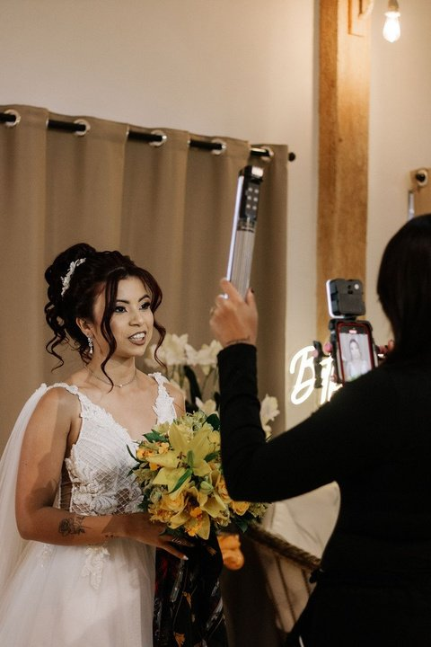

Bastidores
Preparativos e momentos espontâneos que fazem parte da história do casal.
STORYMAKER / CASAMENTOS
Um olhar para os bastidores, as emoções e os detalhes que contam a história de vocês de forma leve e verdadeira.
Solicitar proposta Ver portfólio ↘
SUELEN CREATIVE CO. / PORTFÓLIOO SERVIÇO
Conheça as possibilidades de atendimento. Cada proposta é organizada de acordo com as necessidades do projeto.
A duração da cobertura, os formatos de entrega e os detalhes são alinhados em uma proposta sob medida.
PORTFÓLIO
PROPOSTA SOB MEDIDA
Conte o que você procura. A Suelen confirma disponibilidade, formatos de entrega e condições diretamente no atendimento.
Solicitar orçamento